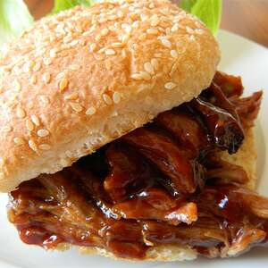

Pulled Pork

Delicious home madePulled Pork Sandwich
Ingredients:
- 1(2 1/2 pound)boneless pork loin roast
- water as needed
- 1(18 ounce) bottle barbeque sauce (such as Dinosaur)
- 8 large sandwich buns, split
Steps on how to prepare:
- Place pork in a slow cooker and add enough water to cover the bottom of the slow cooker.
- Cook on low for 7 hours. Transfer pork to a bowl and shred with 2 forks. Return pork to slow cooker and stir in barbeque sauce. Continue to cook on Low for 45 minutes to 1 hour.
-
Spoon a generous amount of pork into each split sandwich.
Nutrition Facts
Per Serving 536 calories; protein 30g; carbohydrates 65.1g; fat 15.9g; cholesterol 67.3mg; sodium 1216.2mg.
Click to return Home